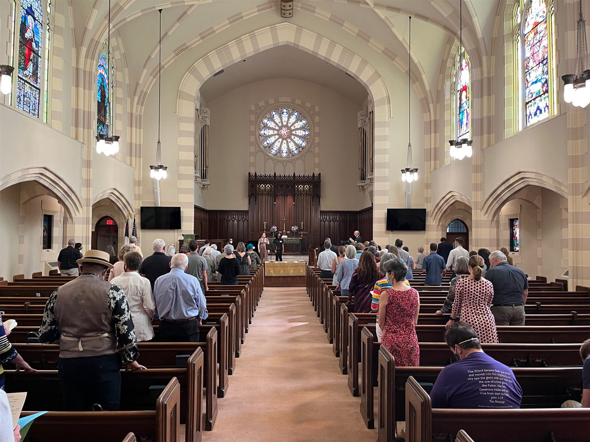
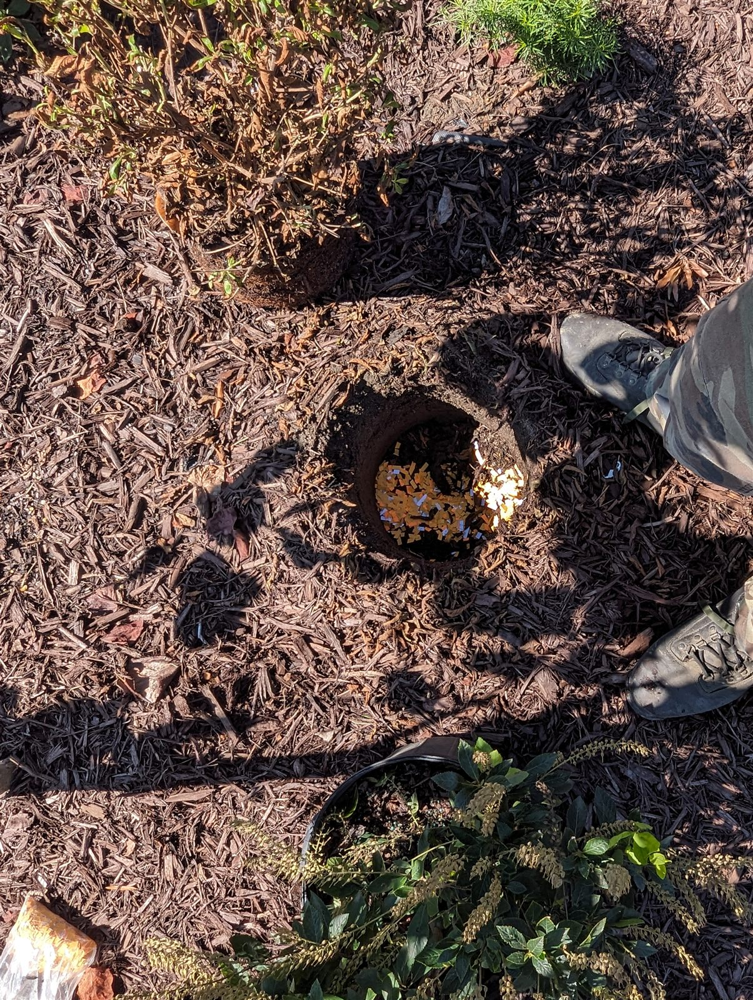

OUR HISTORY
We started in 2022 as a small gathering with bold prayers. This is where we've been — help us grow this page by sending photos from 2023, 2024, and 2025.
2022 · DAY OF REPENTANCE
The first gathering, held at a church on Monument Avenue one year after the removal of the Robert E. Lee statue — the event that would become One Day, One Step.

The congregation gathers for the Service of Repentance and Healing.

Names written for forgiveness, released by burning — part of the Lament, Repent, Forgive liturgy.
2024 · RECAP
...and God has grown us every year. Watch a recap from our 2024 gathering.
Featured in
E Pluribus Unum
The 2022 Day of Repentance was featured in E Pluribus Unum’s report, “The Legacy of Confederate Memorials and the Promise of Public Spaces.” One Day, One Step is an Unum Alliance member.
Save the date
One Day, One Step 2026